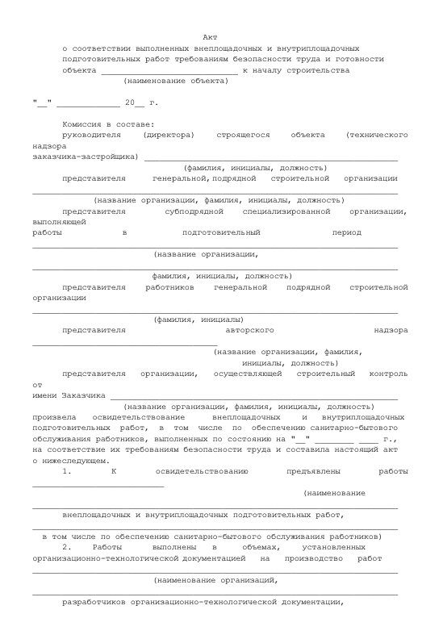

Какие требования охраны труда предъявляют к производственным территориям
В этом курсе вы узнаете, что такое производственные территории, поймете, каким требованиям охраны и безопасности труда они должны соответствовать. А также проанализируете правила эксплуатации технологического оборудования, которые важно соблюдать во время строительства. На вводном уроке расскажем на примерах, как создать безопасное пространство на производственных территориях. Изучите требования к опасным зонам и строительных площадкам.
Как обезопасить производственные территории
Чтобы обеспечить безопасное производство работ, подготавливают:
- производственные территории, площадки строительных и промышленных предприятий с объектами строительства, производственными и санитарно-бытовыми зданиями и сооружениями;
- участки работ;
- рабочие места.
Подготовительные мероприятия заканчивают до начала строительных работ.
Производственные территории, здания и сооружения, участки работ и рабочие места вновь построенных или реконструируемых промышленных объектов проверяют на соответствие требованиям охраны и безопасности труда, когда их принимают в эксплуатацию.
Окончание подготовительных работ на строительной площадке принимают по акту о выполнении мероприятий по безопасности труда.
Рекомендуемый образец акта

Производственные территории и участки проведения строительного производства ограждают от доступа посторонних лиц. Места прохода людей в пределах опасных зон закрывают защитными ограждениями.
Пример
Входы в строящиеся здания защищают козырьком, который выступает не менее, чем на 2 м от стены здания. Угол между козырьком и стеной над входом должен быть от 70° до 75°.
У въезда на производственную территорию при капитальном строительстве устанавливаются стенды, на которых указывают:
- строящиеся, сносимые и вспомогательные здания и сооружения;
- въезды;
- подъезды;
- схемы движения транспорта;
- местонахождение водоисточников;
- средства пожаротушения.
Автомобильные дороги, которые находятся на производственных территориях, оборудуют дорожными знаками, которые регламентируют порядок движения транспортных средств и строительных машин.
Требования к опасным зонам
Гражданские или производственные здания и сооружения, транспортные или пешеходные дороги и другие места возможного нахождения людей могут попадать в зону перемещения грузов кранами. Чтобы избежать рисков, соблюдайте правила:
- оснащайте краны дополнительными средствами ограничения зоны их работы, чтобы не допускать опасных зон в местах, где находятся люди;
- скорость поворота стрелы крана в сторону границы рабочей зоны должна быть ограничена до минимальной при расстоянии от перемещаемого груза до границы зоны менее 7 м;
- перемещайте грузы на участках, расположенных на расстоянии менее 7 м от границы опасных зон, применяйте дополнительные съемные грузозахватные приспособления, предотвращающие падение груза;
- по периметру здания установите защитный экран с равной или большей высотой по сравнению с высотой возможного нахождения груза, перемещаемого краном;
- зона работы крана должна быть ограничена таким образом, чтобы перемещаемый груз не выходил за контуры здания в местах расположения защитного экрана.
Требования к строительной площадке
Территорию строительной площадки, включая проезды, проходы на производственных территориях, проходы к рабочим местам содержат в чистоте, очищают от мусора и снега, не загромождают складируемыми материалами и строительными конструкциями.
При производстве работ в темное время суток строительные площадки и участки строительного производства, рабочие места, проезды и подходы к ним должны быть освещены.
Санитарно-бытовые и производственные помещения и площадки для отдыха работников, а также автомобильные и пешеходные дороги располагают за пределами опасных зон.
Для работающих на открытом воздухе предусматривают навесы для укрытия от атмосферных осадков.
Допуск на производственную территорию посторонних лиц, а также работников в нетрезвом состоянии, в состоянии наркотического или токсического опьянения или не занятых на работах на данной территории запрещен
Где устанавливать ограждения и средства связи
Ограждения устанавливают на строительных площадках, территориях населенных пунктов или на производственных территориях, где есть котлованы, ямы, траншеи и канавы в местах, в которых происходит движение людей и транспорта.
В местах перехода через траншеи, ямы, канавы должны быть установлены переходные мостики шириной не менее 1 м, огражденные с обеих сторон перилами высотой не менее 1,1 м, со сплошной обшивкой внизу на высоту 0,15 м и с дополнительной ограждающей планкой на высоте 0,5 м от настила.
В памятке ниже собрали требования охраны труда при организации проведения работ. Скачайте файл и используйте в своей работе.
Материал к уроку (PDF)
Требования охраны труда при организации проведения работ (производственных процессов)
PDF получен с исходной страницы. Поля для названия организации и других персональных данных оставлены пустыми.
Колодцы, шурфы и другие выемки должны быть закрыты крышками, щитами или ограждены. В темное время суток их освещают электрическими сигнальными лампочками.
Территориально обособленные помещения, площадки и участки строительного производства обеспечивают телефонной связью или радиосвязью.
Задание
Встроенное упражнение — сохранен текст
Статическое представление
TestCards
Текстовые фрагменты упражнения извлечены с исходной встроенной страницы. Проверка ответов и анимация здесь не работают.
- Новая статья WEB АРМ
- Какие требования охраны труда предъявляют к производственным территориям
- Подготовительные мероприятия должны быть закончены до начала производства работ, а окончание подготовительных работ на строительной площадке должно быть:
- оформлено согласно указаниям наряда-допуска
- соответствовать государственным требованиям охраны труда
- принято по акту о выполнении мероприятий по безопасности труда
- закончено согласно указаниям ППР
- Вам стоит повторить тему урока :(
- Вы отлично усвоили тему!
- Входы в строящиеся здания (сооружения) должны быть:
- защищены сверху козырьком, выступающим не менее 2 м от стены здания, угол между козырьком и вышерасположенной стеной над входом должен быть от 70° до 75°
- защищены сверху козырьком, выступающим не менее 1,5 м от стены здания, угол между козырьком и вышерасположенной стеной над входом должен быть от 60° до 75°
- защищены сверху козырьком, выступающим не менее 2 м от стены здания, угол между козырьком и вышерасположенной стеной над входом должен быть от 60° до 65°
- защищены сверху козырьком, выступающим не менее 1,5 м от стены здания, угол между козырьком и вышерасположенной стеной над входом, должен быть от 70° до 75°
- Территория строительной площадки, включая проезды, проходы на производственных территориях, проходы к рабочим местам должны:
- содержаться в чистоте
- очищаться от мусора и снега
- не загромождаться складируемыми материалами и строительными конструкциями
- все варианты верны
- В темное время суток ограждения должны быть:
- освещены электрическими сигнальными лампочками
- обозначены люминисцентными знаками
- ограждены сигнальной лентой
- специальных обозначений не требуется
Переходите к следующему уроку, в котором подробно изучите требования охраны труда к организации рабочих мест.